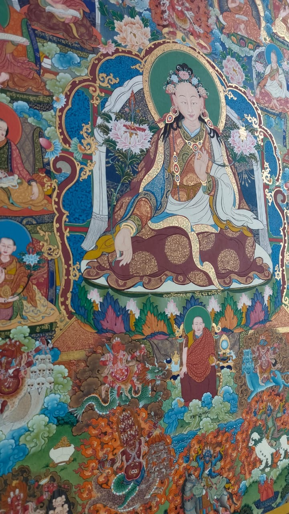
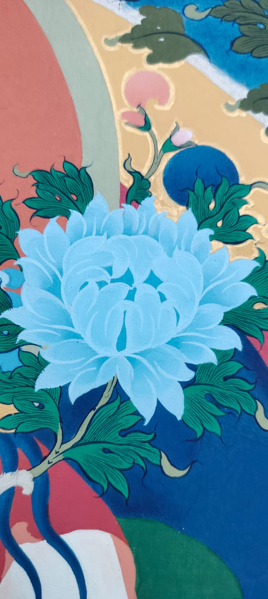
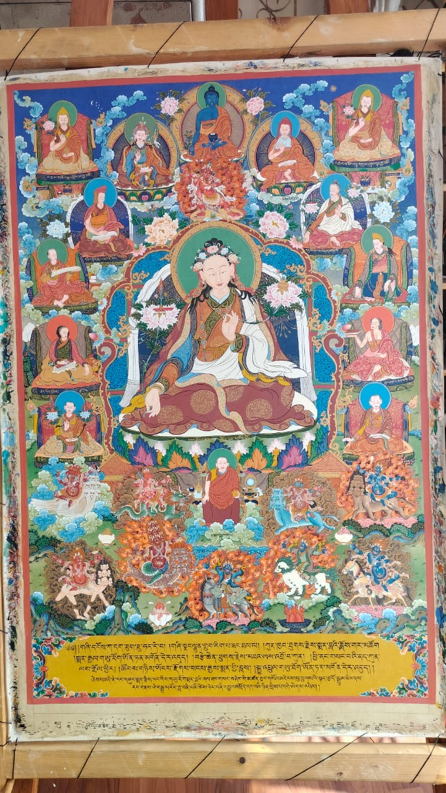
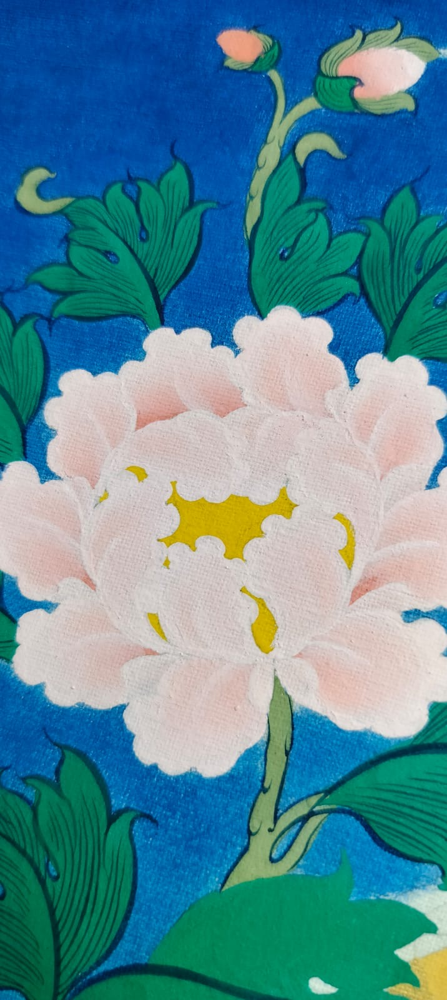
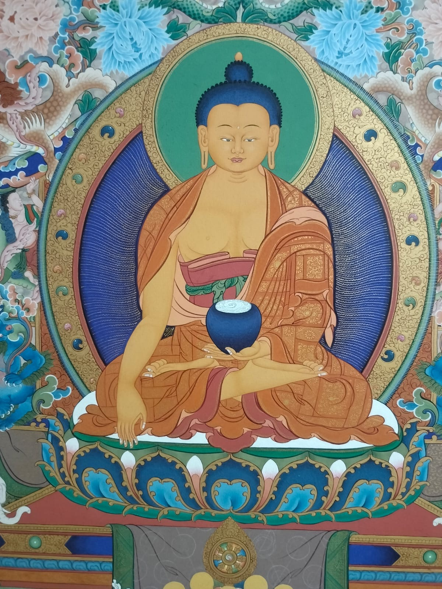
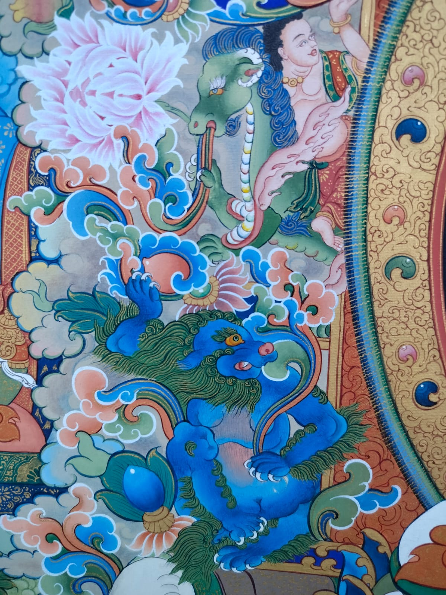
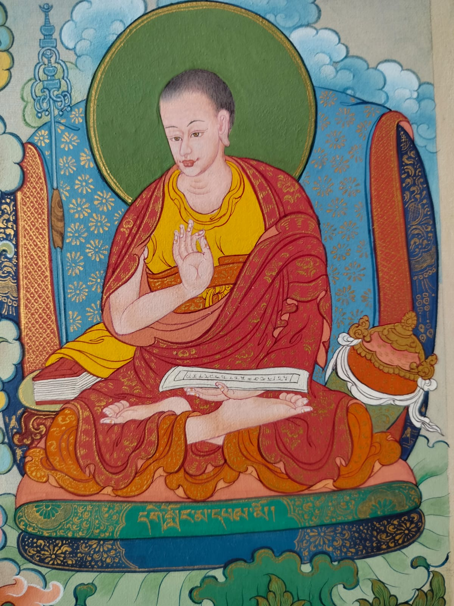
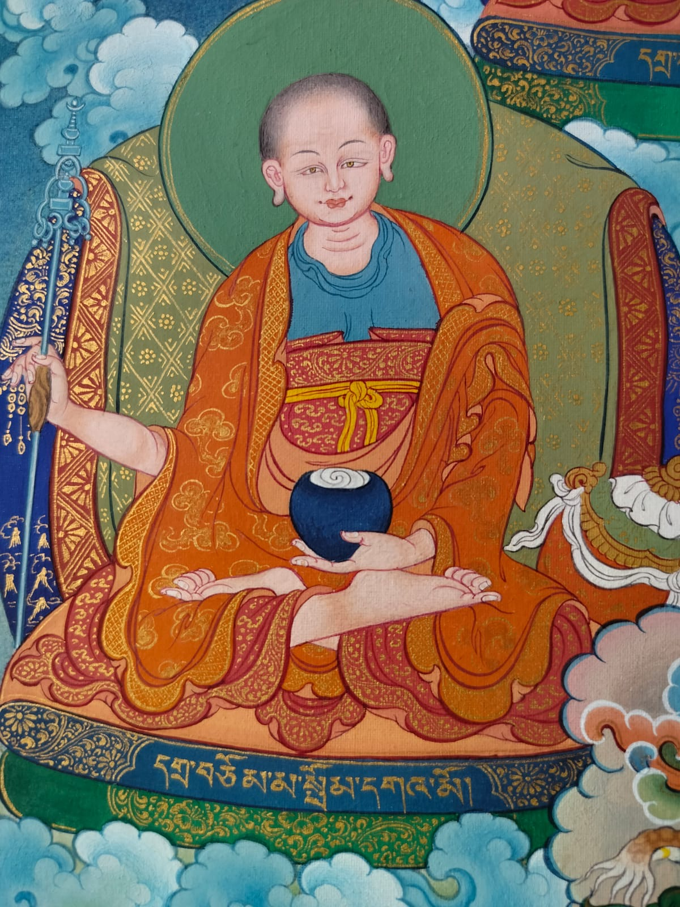
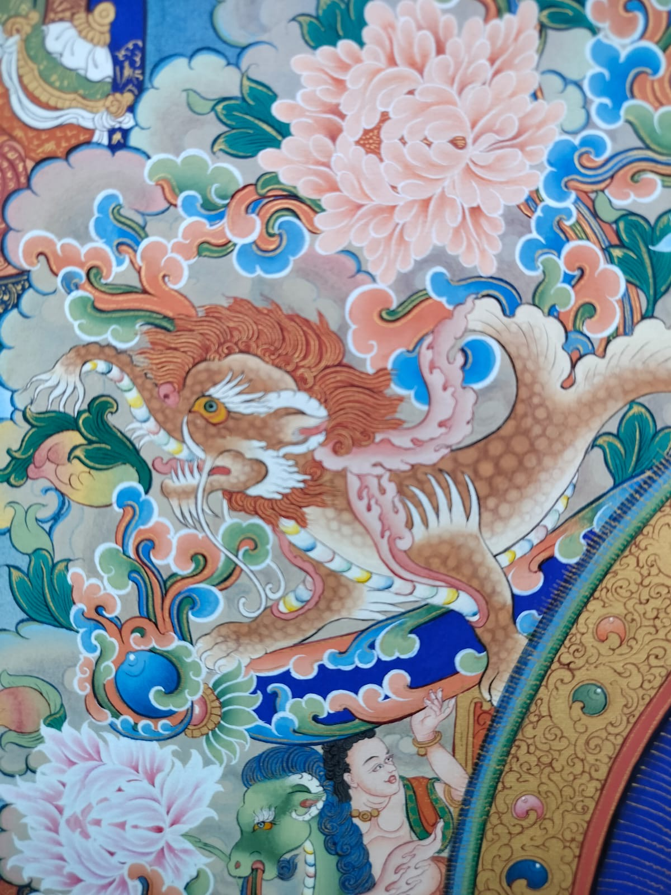
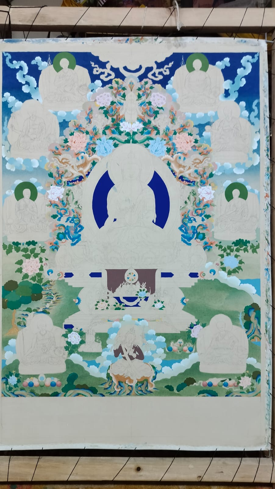

First Lines
A gentle introduction for beginners. Work with simple elements such as flowers, clouds, plants or a Buddha head.
Enquire about thisLearn the discipline behind the image. Traditional drawing, proportion, colour and fine detail are taught in a small working atelier with master Bhuchung Tsering.
Explore the courses ↓

Thangka painting is a disciplined visual practice. Proportion, line, colour and detail are learned through careful observation and repeated practice. At Tsering Thangka Studio, students learn these foundations directly, in a close teacher-student setting.
The canvas, surface and working materials are prepared before the painting begins.
Structure comes first: proportion, composition and iconometry establish the figure.
Colour is built gradually through layers, shading and controlled transitions.
Fine lines, ornaments and expression require patience and a steady hand.
Where appropriate, gold work and final details bring the painting together.








All workshops run from 10 AM–4 PM. Materials are provided. Short workshops welcome beginners; basic drawing skills are helpful. Payment confirms a place.
A gentle introduction for beginners. Work with simple elements such as flowers, clouds, plants or a Buddha head.
Enquire about thisBuild on the basics with an introduction to Thangka iconometry and the proportions of the figure.
Enquire about thisMore time to develop the painting, adding depth, detail and refinement to the foundations of traditional practice.
Enquire about thisFive days a week, with a maximum of three students. Study iconometry, pigments and colour, shading, fine detail and gold work. Depending on progress, students may complete a simple Thangka.
Request a start dateMaster Bhuchung Tsering has more than 40 years of experience in Thangka painting and has exhibited his work in India and several European countries. The studio is intentionally small so students can work closely with him and receive individual attention.
Master students may assist with teaching when appropriate. The emphasis remains on patient practice, close observation and developing a strong foundation rather than rushing toward a finished image.
Working studio photographs will live here: the tables, pigments, tools, students and the everyday rhythm of painting.
Tsering Thangka Studio is a small, cozy working atelier in McLeod Ganj, Dharamsala. Classes are deliberately limited so students can work closely with the teacher and receive individual attention.
There is no need to arrive with prior Thangka knowledge. For the short workshops, basic drawing skills are helpful. Materials are provided.
For one-month students, the studio can help find nearby accommodation, although accommodation itself is not provided.
Message the studioCommission a traditional Thangka created with mineral and natural pigments, with gold work where appropriate. You can choose the subject and discuss custom compositions or details within traditional iconographic rules.
A typical commission takes around six months. Progress updates are shared throughout the painting process. Commissions can be shipped within India or internationally, and framing is available.
Request a commissionRequest & discussion
Quotation & 30% deposit
Sketch & painting
Completion, balance & shipping
No. The short workshops are beginner friendly. Basic drawing skills are helpful, but prior Thangka knowledge is not required.
Yes. Materials are provided for the workshops and one-month training.
The short workshops have a maximum of 10 students. The one-month training has a maximum of 3 students.
Start dates are arranged according to studio availability. Contact the studio first so a suitable date can be confirmed before payment.
Start with a request and discussion. The studio provides a quotation, then a 30% deposit confirms the commission. A sketch is prepared before the painting proceeds, with progress updates along the way.
WhatsApp or Telegram: +91 75910 82810. Email: kris0208@gmail.com.